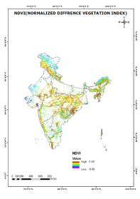
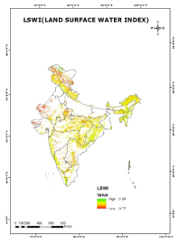
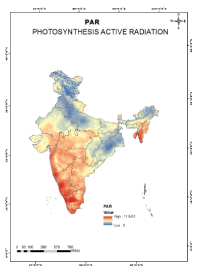
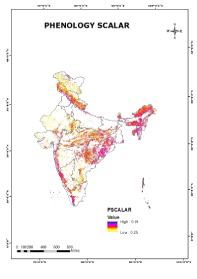
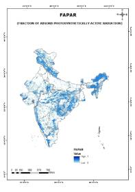

| Image | Descriptions |
|---|---|
|  | NDVI is used to quantify vegetation greenness and is useful in understanding vegetation density and assessing changes in plant health. NDVI is calculated as a ratio between the red (R) and near infrared (NIR) values in traditional fashion: (NIR - R) / (NIR + R) |
|  | The Land Surface Water Index (LSWI) uses the shortwave infrared (SWIR) and the NIR regions of the electromagnetic spectrum. There is strong light absorption by liquid water in the SWIR, and the LSWI is known to be sensitive to the total amount of liquid water in vegetation and its soil background. |
|  | Photosynthetically active radiation (PAR) is light of wavelengths 400-700 nm and is the portion of the light spectrum utilised by plants for photosynthesis. Photosynthetic photon flux density (PPFD) is defined as the photon flux density of PAR. |
|  | Phenology describes the seasonal timing of events in the life of an organism. In the DGVM context, the key phenological events that are modeled are the timing of budburst, the length of time required to the full 'leaf-on' state, and the timing of leaf senescence and/or abscision. |
|  | The FAPAR quantifies the fraction of the solar radiation absorbed by live leaves for the photosynthesis activity. Then, it refers only to the green and alive elements of the canopy. The FAPAR depends on the canopy structure, vegetation element optical properties, atmospheric conditions, and angular configuration. |